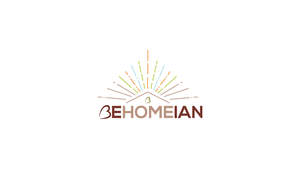

Trade Mark Journal No.2025/011 14 March 2025
UK00004166609 27 February 2025 (18,20,21,24,27,35)

- Class 18
- Horse rugs; Furniture coverings of leather; Coverings (Furniture -) of leather.
- Class 20
- Pouffes [furniture]; Cushions [furniture]; Nap mats [cushions or mattresses]; Carpet coasters for protecting furniture legs; Cushions (upholstery); Woven timber blinds [furniture]; Soft furnishings [cushions]; Beds, bedding, mattresses, pillows and cushions; Furniture and furnishings; Pillows; Coverings (Fitted -) for furniture; Closets (Towel -) [furniture]; Towel closets [furniture]; Shelves; Shelves for books; Furniture shelves; Shelves [furniture]; Shelves for storage; Box shelves; Book shelves; Display shelves; Folding shelves; Wall shelves furniture; Storage shelves [furniture]; Slanted shelves; Bookshelves; Writing shelves; Show shelves; Shelves for filing-cabinets [furniture]; Shelves being nursery furniture; Shelves of metal [furniture]; Hangers (Non-metallic -) for shelves; Prefabricated shelves [furniture]; Non-metallic shelves [furniture]; Non-metallic wall shelves [furniture]; Rack bars for shelves [non-metallic]; Shelving; Shelves in the nature of furniture; Wall shelves [structures] of metal; Shelf units [furniture]; Shelves for display purposes; Fixings, not of metal for shelves; Shelves of non-metallic materials [furniture]; Shelf dividers of metal [parts of furniture]; Shelves for sale in kit form; Shelf dividers (Non-metallic -); Wall shelves [structures] of non-metallic materials; Office shelving; Channelled strips (Non-metallic -) for securing shelves to walls; Shelf dividers (Non-metallic -) being parts of furniture; Shelf bars (Non-metallic -); Desk racks [furniture]; Cabinets; Drawers; Storage cupboards [furniture]; Cupboards being furniture; Cupboard doors; Consignment shelving [furniture]; Drawers for furniture; Wooden shelving [furniture]; Shop shelvings; Shelving units; Storage cabinets [furniture]; Storage drawers [furniture]; Hanging storage racks [furniture]; Dividers for drawers; Metal shelving [furniture]; Metal shelving; Furniture racks; Racks [furniture]; Shelf brackets (Non-metallic -); Furniture cabinets; Cabinets [furniture]; Stacking dresser drawer units; Shelf brackets (Non-metallic -) being parts of furniture; Bedside cabinets; Hangers (Non-metallic -) for shelving; Display cabinets [other than refrigerating display cabinets]; Drawer fronts; Modular shelving [furniture]; Display cabinets; Shelf supports of metal [parts of furniture]; Drawer dividers; Shelving made of metal [furniture]; Kitchen cabinets; Racks; Kitchen cupboards; Cupboard units; Cabinet doors; Storage racks; Storage boxes for pillows [furniture]; Wooden racks [furniture]; Paper racks [furniture]; Storage boxes [furniture]; Racks being furniture of metal; Rack bars [furniture]; Non-metallic racks [furniture] for use in storage; Non-metallic storage racks [furniture]; Clothes racks [furniture]; Luggage racks being furniture; Screens [furniture] for use as room dividers in offices; Display racks; Padded furniture; Leather furniture; Upholstered furniture; Protective coverings for furniture [shaped]; Panelling for furniture; Furniture; Bamboo furniture; Upholstered convertible furniture; Protective coverings for furniture [fitted]; Furniture incorporating beds; Stuffed furniture; Bathroom fittings in the nature of furniture; Non-metallic fittings for furniture; Miniature furniture made of wood fibre; Decorative wooden panels [furniture]; Decorative edging strips of wood for use with fitted furniture; Recliners [furniture]; Scented pillows; Fittings, not of metal (Furniture -); Furniture fittings, not of metal; Wooden furniture; Furniture for house, office and garden; Living room furniture; Office furniture; Furniture (Office -); Bedroom furniture; Kitchen furniture; Personal computer work stations [furniture]; Dreamcatchers [decoration]; Bead curtains for decoration; Curtains (Bead -) for decoration; Wall decorations of wood; Desk units; Office desks; Desks; Computer desks; Roll-top desks; Standing desks; Desks (Standing -); Writing desks; Typing desks; Desks and tables; Lap desks; Desks [furniture]; Lap desks being furniture; Mobile writing desks; Office chairs; Portable desks; Office armchairs; Office tables; Chairs being office furniture; Modular desks [furniture]; Desks of adjustable height; Bedside lockers; Computer tables; Computer workstations [furniture]; Computer keyboard trays; Computer cabinets [furniture]; Room dividers; Furniture for sitting; Bedside tables; Lounge chairs; Room divider panels [furniture]; Work counters [furniture]; Free standing office partitions; Work chairs; Pedestal chairs; Bed chairs; Cabinet work; Office seats; Drawer slides [furniture hardware]; Computer stands; Computer furniture; Shelves for typewriters; Office requisites [furniture]; Worktables; Library shelves; Drawer organizers; Bench seating; Seating furniture; Chairs [seats]; Seats; Support pillows for use in baby seating; Seats [furniture]; Dining chairs; Seat cushions; Reclining chairs; Booster seats; Reclining armchairs; Lounge furniture; Benches; Chairs; Benches [furniture]; Bench tables; Seat covers [shaped] for furniture; Chair cushions; Height adjustable tables; Patio furniture; Vice benches [furniture]; Floatable [inflatable] seats; Chaise lounges; Love seats; Tables [furniture]; Contour chairs; Bean bag pillows; Throw pillows; Sleeping mats of bamboo or straw; Stuffed pillows; Wood planters; Pedestals for plant pots; Pedestals (Flower-pot -); Flower baskets of wicker; Garden furniture; Decorative baskets made of wicker; Tables for use in gardens; Stands for flower pots; Wicker baskets; Containers made of cane; Garden furniture manufactured from wood; Hanging baskets [flower] of non-metallic materials; Cane furniture; Decorative baskets made of wood; Wooden pallets; Wooden crates; Wooden bedsteads; Furniture for displaying goods; Wooden panels for furniture; Wooden boxes; Wooden sculptures; Wooden barrels; Wooden boxes for storing toys; Wooden chests for the storage of toys; Wooden bins; Wooden storage boxes; Wooden signboards; Wooden containers [other than for household or kitchen use]; Decorative wood boxes; Prefabricated doors of wood for furniture; Wooden beds; Miniature furniture made of wood; Wood crates; Domestic furniture made of wood; Indoor furniture; Furniture for bathrooms; Furniture for storage; Storage furniture; Trolleys [furniture]; Furniture partitions; Furniture frames; Pet furniture; Furniture partitions of wood; Partitions of wood for furniture; Transformable furniture; Furniture for washrooms; Stackable furniture; Mirrors [furniture]; Inflatable furniture; Furniture (Inflatable -); Domestic furniture; Screens [furniture]; Furniture screens; Countertops [furniture parts].
- Class 21
- Planters of earthenware; Planters of clay; Planters of porcelain; Planters of pottery; Planters of china; Pots for plants; Flowerpots; Holders for plants; Bowls for plants; Plant pots; Indoor terrariums for plants; Pots for flowers; Flower pots; Pots (Flower -); Pots; Holders for flowers and plants [flower arranging]; Plant baskets; Pepper pots; Porcelain flower pots; Bases for plant pots; Plant holders; Holders for flowers; Urns being vases; Coffee pots; Containers for flowers; Stone pots; Flower pot holders; Roses for watering cans; Tea pots; Earthen pots; Glass flowerpots; Flower vases; Flower baskets; Vases.
- Class 24
- Lap rugs; Travelling rugs; Travellers' rugs; Tartan travelling rugs; Travelling rugs [lap robes]; Woven fabrics for furniture; Furniture coverings of textile; Coverings (Furniture -) of textile; Coverings for furniture; Quilt bedding mats; Woven fabrics for sofas; Woven fabrics for cushions; Throws (furniture coverings); Textiles for upholstery; Silk fabrics for furniture; Mats [coasters] of textile; Coverlets [bedspreads]; Tablecloths of textiles; Textiles for furnishings; Loose furniture coverings; Loose coverings for furniture; Coverings (Loose -) for furniture; Dinner mats of textiles; Mats of linen; Jute fabrics; Bedspreads; Upholstery fabrics; Furniture coverings (unfitted); Towels of textiles; Woven fabrics for armchairs; Quilted blankets [bedding]; Coverings of plastics for furniture; Unfitted fabric slipcovers for furniture; Tablemats of textile; Tapestries [wall hangings], of textile; Fibre fabrics for the manufacture of the exterior coverings of furniture; Furnishing and upholstery fabrics; Coverings of textile and of plastic for furniture (unfitted); Furniture coverings of plastic; Coverings of plastic for furniture; Velours for furniture; Tapestries of textile; Textile fabrics for use in the manufacture of wall coverings; Fabrics for use in the manufacture of exterior coverings for chairs; Valances [textile draperies]; Woven linen fabrics; Sofa blankets; Silk blankets; Bedroom textile fabrics; Woven furnishing fabrics; Padded coverings [hangings of textile] for existing walls; Woven fabrics; Handcrafted textile wall hangings; Wool yarn fabrics; Curtains of textiles or plastic; Woven fabrics for use in the manufacture of clothing for use in clean rooms; Textile tablecloths; Tablecloths of textile; Woolen blankets; Textiles; Textile fabrics for use in the manufacture of furniture; Curtains of textile; Tapestry [wall hangings], of textile; Soft furnishings; Furnishing fabrics; Textiles in the form of window furnishings; Protective coverings for furniture [loose]; Coverings of textile and of plastic for furniture (not fitted); Loose covers made of textile materials for furniture; Furnishing fabrics in the piece; Furnishing fabrics being textile piece goods; Protective loose covers for mattresses and furniture; Window furnishing fabrics; Interior decoration fabrics; Textile covers [loose] for furniture; Drapes in the nature of curtains made of textile materials; Disposable bedding of textile; Textile goods for use as bedding; Textile fabric piece goods for the manufacture of upholstered furniture; Fabrics for manufacturing garden furniture; Textiles for interior decorating; Small curtains made of textile materials; Fabrics for interior decorating; Textile fabrics for making into linens; Fireproof upholstery fabrics; Rubberized textile fabrics; Blanket throws; Bed blankets; Blankets (Bed -); Lap blankets; Picnic blankets; Woollen blankets; Silk bed blankets; Cotton blankets; Hooded blankets; Bed linen and blankets; Bed blankets made of cotton; Blankets with sleeves; Bed clothes and blankets; Yoga blankets; Afghans [knitted covers]; Blankets for outdoor use; Bed blankets made of man-made fibres; Covers for eiderdown and duvets; Pillow covers; Bed warmer covers; Quilts of towel; Eiderdown covers; Flannel; Children's blankets; Duvet covers; Travelling blankets; Quilt covers; Flannel [fabric]; Textile fabrics for making into blankets; Bed quilts; Ticks (mattress and pillow coverings); Covers for pillows; Bed covers of paper; Quilts made of terry cloth; Textile printers' blankets; Woolen cloth; Woolen fabric; Bed covers; Pillow slips; Chenile fabric; Pillowcases [pillow slips]; Fabric bed valances; Canopies (bed linen); Chenille fabric; Bed linen of paper; Sleeping bag sheet liners; Towel sheet; Covers for duvets; Bed coverings; Eiderdowns [down coverlets]; Bivouac sacks being covers for sleeping bags; Sleeping bags [sheeting]; Woollen cloth; Bath wrap towels; Eiderdowns [quilts]; Bed sheets of paper; Wool loop knit fabrics; Cotton knitted fabric; Mattress covers; Valanced bed covers; Fabrics made from wool, other than for insulation; Textile goods, and substitutes for textile goods; Coated fabrics for use in the manufacture of leather goods; Textile piece goods; Piece goods (Textile -); Waterproofed textile piece goods; Textile piece goods for clothing; Fabrics [piece goods]; Textile piece goods for use in the manufacture of protective clothing; Household textile piece goods; Household textile goods; Synthetic textile piece goods; Textile fabric piece goods for use in the manufacture of clothing; Fabrics being textile piece goods; Textile piece goods for furnishing purposes; Non-woven piece goods; Textile piece goods for making curtains; Printed textile piece goods; Textile piece goods made of cotton; Non-woven textile piece goods; Fabrics of man-made fibres being textile goods in piece form; Curtaining material being textile piece goods; Textile piece goods for making-up into towels.
- Class 27
- Rugs; Carpets, rugs and mats; Rugs [mats]; Underlays for rugs; Fur rugs; Rugs (Floor -); Bathroom rugs; Rugs for animals; Area rugs; Prayer rugs; Rugs (Door -); Carpets; Oriental non-woven rugs (mosen); Carpets [textile]; Carpet tiles made of textiles; Carpeting; Anti-slip material for use under rugs; Underlay for carpets; Carpet tiles; Tiles (Carpet -); Textile bath mats; Underlays for carpeting; Moquettes [carpets]; Fabric bath mats; Textile floor mats for use in the home; Bathroom tiles [carpet]; Carpet underlays; Linoleum tiles [floor coverings]; Puzzle mats [floor coverings]; Carpet tiles for covering floors; Hand made woollen carpets; Carpet runners; Textile wall coverings; Wall coverings of textile; Floor tiles made of carpet.
- Class 35
- Shop retail services connected with carpets; Retail services relating to home textiles.
Suman Bhardwaj